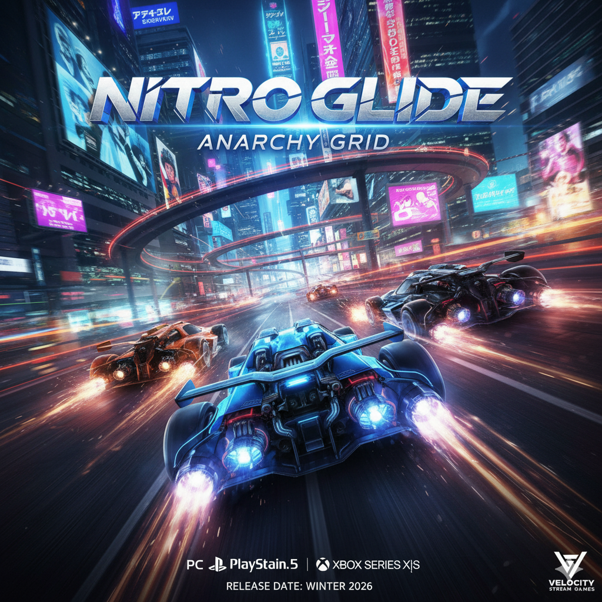

NitroGlide: Domine a Derrapagem. Destrua o Cronômetro.
Em um mundo onde as leis da física são meras sugestões e a velocidade é a única moeda que importa, nasceu o NitroGlide. Esta não é uma corrida comum. Esqueça as pistas limpas e as regras chatas. Aqui, a competição acontece nas vias mais extremas do planeta, de canyons de neon no Japão a geleiras traiçoeiras no Ártico, todas projetadas para testar a loucura e a precisão dos pilotos. Você é um Ghost Rider "–" um piloto misterioso que surgiu do submundo das corridas ilegais, determinado a conquistar o campeonato Apex Speed. Você dirige máquinas que são mais artefatos de engenharia do que carros, equipadas com sistemas experimentais de propulsão a nitro que transformam pneus em fumaça e retas em borrões. Mas o Apex Speed não é apenas sobre ser o mais rápido. É sobre a Derrapagem Perfeita, a arte de deslizar no limite do controle para carregar seu tanque de nitro. É sobre timing, precisão e, acima de tudo, o destemor de arriscar tudo na próxima curva. Sua rival é a implacável "A Condessa", a atual campeã que nunca perdeu uma corrida e que vê em você uma ameaça a ser eliminada, não superada. O NitroGlide te espera. Sua garagem está cheia de máquinas que imploram por customização. O asfalto está chamando. Você tem a habilidade para dominar a derrapagem, a coragem para acionar o nitro no momento certo e a determinação para deixar todos os outros comendo poeira? Ligue o motor. A corrida começa agora.